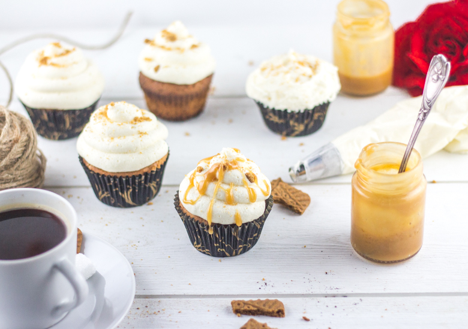
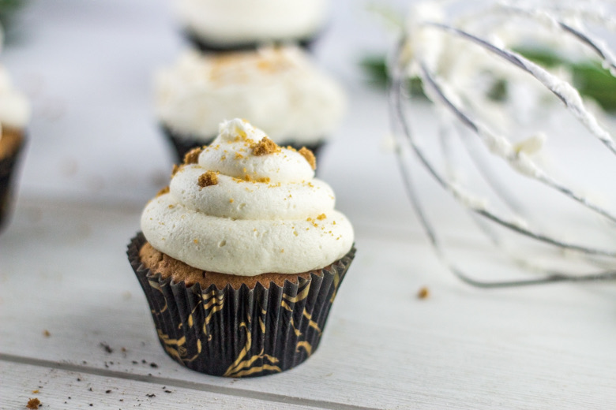
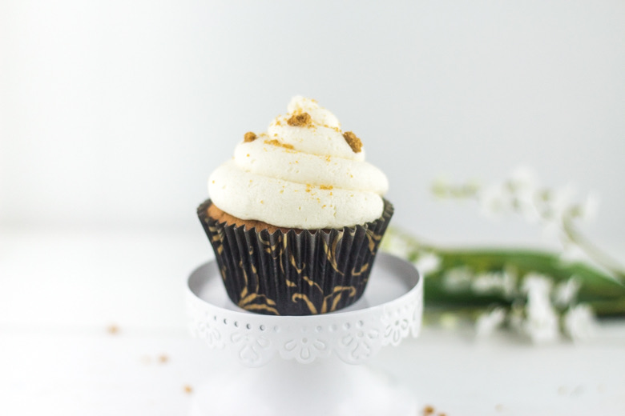
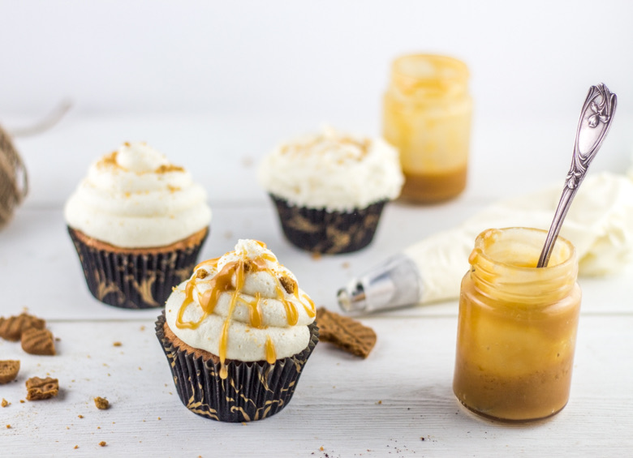

Cupcake speculoos caramel au beurre salé

Ici vous trouverez la recette de mon cupcake speculoos arrosé de caramel au beurre salé! Autant vous dire que c’est un vrai régal 🙂
Ce n’était pas si innocent que ça finalement quand j’ai posté il y a quelques jours la recette du caramel au beurre salé ici (« inratable ») car sans cette recette je ne pouvais pas vous parler de mon cupcake speculoos qui aime bien se marier justement avec du caramel beurre salé! C’est donc pour cette raison qu’il a fallu attendre un peu pour cette recette! Alors que ceux qui me la réclament depuis quelques jours, l’ayant vu passer sur mon compte instagram, se rassurent car c’est aujourd’hui l’heure de la recette (enfin^^)!!
Cela fait très très longtemps maintenant que je fais cette recette sauf que cette fois-ci j’ai modifié quelque chose. En effet, habituellement je réalise un glaçage au beurre à la meringue suisse (recette ici) puis je plaçais dans une grande poche à douille à la fois une poche à douille contenant le glaçage au beurre et une autre contenant de la pâte à spéculoos! J’obtenais ainsi un topping de deux couleurs avec un rappel de speculoos (si ça vous tente n’hésitez pas à faire comme cela!).
Mais depuis, je suis partie à New-York et que j’ai dégusté (dévoré) les fabuleux cupcakes de Magnolia Bakery avec leur fameux glaçage au beurre à la vanille, je peux vous dire que maintenant il fait partie de mes préférés! Mon chéri aussi a adoré, alors forcement je me devais de le reproduire à la maison!!
J’ai donc acheté le livre de pâtisserie de Magnolia Bakery et je me suis mis à tout convertir! Comme elles l’expliquent très bien dans le livre, ce glaçage n’est pas vraiment un glaçage au beurre… Il faut savoir qu’il n’est absolument pas écœurant mais davantage sucré et sa texture est très aérienne contrairement à un glaçage au beurre classique qui est beaucoup plus compact.
Les mots de mon chéri : « J’ai l’impression de mordre dans un nuage »
Quant à mon cupcake speculoos, il se marie très bien avec ce glaçage légèrement vanillé puis arrosé de caramel au beurre salé! Je vous laisse maintenant découvrir la recette et j’espère qu’elle vous plaira!!
Ingrédients
- Sucre - 100g
- Beurre - 80g
- Farine - 150g
- Levure chimique - 4càc
- Oeufs - 2
- Cannelle en poudre - 2càc
- Sel - 1 pincée
- Crème fraîche - 4càs
- Pâte de spéculoos - 4càs
- Speculoos - 100g
- Beurre - 230g
- Sucre glace - 500g + 3x125g
- Lait - 110g
- Extrait de vanille - 10ml
- Caramel au beurre salé
Instructions
- Préchauffer le four à 170° C.
- Écraser les 100g de spéculoos et réserver. Il existe des spéculoos déjà écrasés sinon enfermez les dans un sachet de congélation et écrasez les à l'aide par exemple d'un rouleau à pâtisserie
- Dans un saladier, fouettez le beurre avec le sucre
- Ajouter les œufs et continuer de remuer
- Mélanger la farine avec la levure, la cannelle et le sel
- Verser ce mélange progressivement dans le mélange oeufs-beurre-sucre tout en remuant
- Ajouter la crème fraîche et la pâte de spéculoos
- Verser les spéculoos écrasés et mélanger jusqu'à obtenir une pâte bien homogène
- Remplir les caissettes au 3/4.
- Cuire 20 minutes au four à 170°C
- Dans le bol de votre robot, mettre le beurre en morceaux
- Ajouter les 500g de sucre glace, le lait et la vanille
- A vitesse moyenne, battre jusqu'à ce que le mélange devienne crémeux. (3-5 minutes)
- Ajouter un premier bol de 125g de sucre glace et mélanger pendant 2 min
- Renouveler l'étape précédente jusqu'à épuisement du dernier bol
- Vous pouvez ajouter du colorant à cette étape de la recette




Les tips de la communauté
Recette très populaire avec des retours mitigés sur le glaçage qui divise sur son goût sucré. Les cupcakes eux-mêmes sont félicités mais le glaçage Magnolia bakery déclenche des questions sur les proportions.
Astuces
- Utiliser de la crème fraîche épaisse (type Bridélice) pour les cupcakes
- Le glaçage à la meringue suisse est une bonne alternative moins sucrée
- La recette américaine du topping est très sucrée, ce qui ne plaît pas à tout le monde
- Modifier le glaçage avec du mascarpone vanillé pour réduire la sucrosité
Variantes suggérées
- Créer une version Kinder Bueno en adaptant le glaçage
- Modifier le glaçage à la meringue suisse avec différents aromatiques
- Tester le glaçage avec du mascarpone au lieu du beurre
Ajustements signalés
- Le glaçage est très sucré (875g de sucre glace pour 24 cupcakes), à adapter selon le goût
- Vérifier la liqueur du glaçage avant de glacer, ajuster la consistance si nécessaire
- La quantité de glaçage est supérieure aux cupcakes car c'est la recette Magnolia Bakery